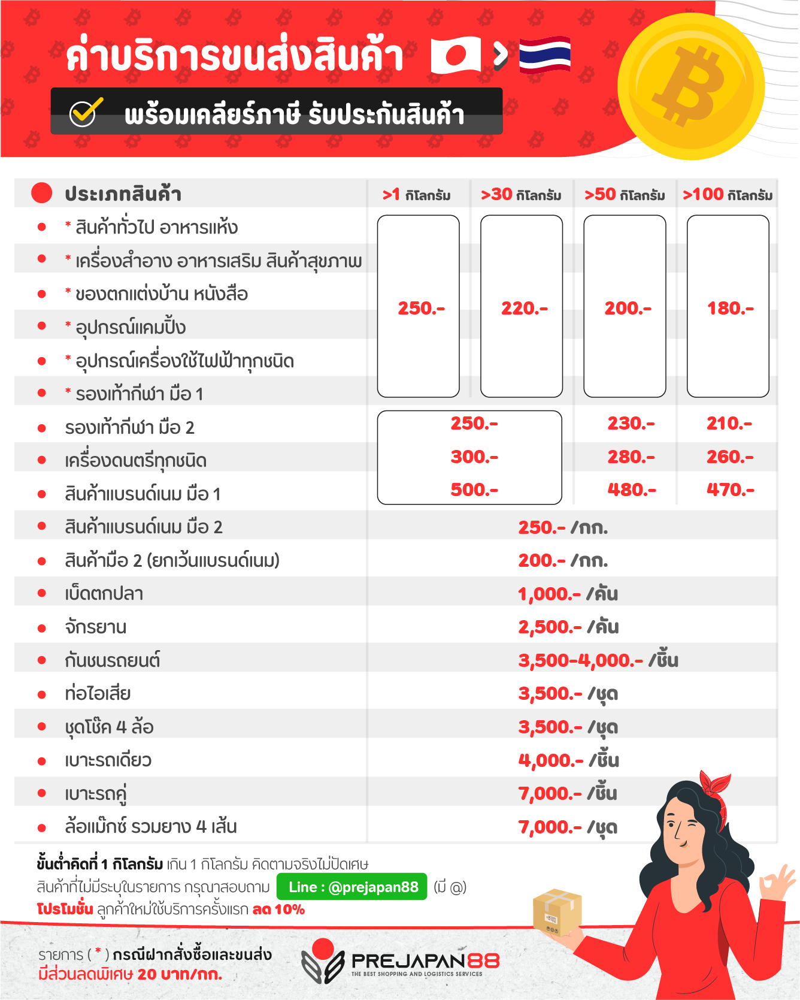

| หน้าแรก |
การนำเข้าสินค้าจากญี่ปุ่นและภาษี
|
ปัจจุบันการสั่งซื้อสินค้าและประมูลสินค้าทางอินเตอร์เน็ตได้รับความนิยมและได้รับความเชื่อถือเป็นอย่างมากจากความรวดเร็วและมั่นคงทางเทคโนโลยี. ทำให้เราสามารถสั่งซื้อสินค้าหรือประมูลสินค้าทั้งในประเทศและต่างประเทศได้
โดยเฉพาะสินค้าจากญี่ปุ่นที่กำลังเป็นที่นิยมเพราะเป็นสินค้าที่มีคุณภาพและราคาไม่สูงมากนัก และสินค้าจากญี่ปุ่นนั้นเป็นที่คุ้นเคยกับคนไทยมาค่อนข้างยาวนาน. ซึ่งเมื่อเทคโนโลยีพัฒนาไปมากจนเราสามารถมองหาสินค้าจากประเทศญี่ปุ่นได้เพียงนิ้วสัมผัสแล้ว
ความต้องการอยากได้สินค้าจากประเทศญี่ปุ่นโดยที่ไม่ต้องเดินทางไปถึงญี่ปุ่นนั้นจึงเกิดขึ้นตามมา และด้วยความก้าวหน้าทางเทคโนโลยีดังกล่าว ทางเวบไซด์ www.jbuybid.com. ซึ่งเป็นเวบไซด์ที่ให้บริการทางด้านการสั่งซื้อสินค้าจากญี่ปุนและประมูลสินค้าจากญี่ปุ่นโดยตรงและมีีการจับมือกับเวบไซด์ซื้อขายสินค้าและประมูลสินค้าของประเทศญี่ปุ่นที่มีสินค้ากว่าสองล้านชิ้นอีกด้วย.
ทำให้เราสามารถติดต่อซื้อขายสินค้าญี่ปุ่นหรือประมูลสินค้าญี่ปุ่นผ่านทางเวบไซนี้ได้ทันที และทางเวบไซด์ยังให้บริการจัดส่งสินค้าจากประเทศญี่ปุ่นจนถึงมือท่านโดยตรงอีกด้วย และเมื่อพูดถึงการสั่งสินค้าจากต่างประเทศแล้วทุกคนก็มักจะนึกถึงเรื่องภาษีทันที ซึ่งโดยปกติแล้วการนำเข้าสินค้าจากต่างประเทศจะต้องเสียภาษีตามอัตราภาษีที่กฎหมายกำหนด เว้นแต่สินค้าที่ราคาไม่เกิน1,000บาท (อัตราภาษีสามารถดูได้ในเวบไซด์ของกรมศุลกากร สินค้าทั่วไปมักจะเก็บที่30%+7%). โดยปกติแล้วเจ้าหน้าที่จองกรมศุลจะใช้วิธีสุ่มตรวจดูจากของชิ้นใหญ่ หรือของที่ดูมีราคาแพง. ของชิ้นเล็กๆจึงมักจะรอดจากการตรวจเก็บภาษี แต่ก็ไม่เสมอไปเพียงแต่อาจจะรอดจากการเก็บภาษีมากกว่าของชิ้นใหญ่เท่านั้น. และบางคนก็ใช้วิธีให้มีการจัดส่งทางไปรษณี ซึ่งเชื่อกันว่ามีทางรอดภาษีมากกว่าการจัดส่งโดยบริษัทที่รับจัดส่งสินค้าโดยเฉพาะ แต่ก็จะได้รับสินค้าช้าเร็วต่างกันไป หรือแม้กระทั่งให้ทางผู้ขายลงราคาสินค้าไม่่ให้เกิน1,000บาทก็มี แต่ถึงอย่างไรการตรวจและคำนวนภาษีก็ขึ้นอยุ่กับว่าเจ้าหน้าที่จะมองว่าสินค้านั้นมีราคาจริงประมานเท่าไหร่ก็มีสิทธคิดภาษีตามจริงได้เช่นกัน แสดงให้เห็นว่าการสั่งสินค้าจากต่างประเทศไม่ว่าวิธีไดก็อาจต้องเสียภาษีเช่นกันหากเจ้าหน้าที่เห็นว่าต้องเสียก็อาจต้องเสียเว้นแต่จะพิสูจน์ได้ว่าไม่ต้องเสียตามกฎหมาย เรียกว่าเสี่ยงดวงก็ว่าได้เหมือนกัน ดังนั้น หากเราใช้บริการจองบริษัทที่เป็นเสมือนตัวกลางในการซื้อขายสินค้าจากต่างประเทศและช่วยบริการส่งสินค้าให้เราจนถึงมือเช่นเวบไซด์www.jbuybid.comที่เป็นเวบไซด์ในการซื้อขายสินค้าญี่ปุ่นและประมูลสินค้าญี่ปุ่น. พร้อมทั้งจัดส่งแบบครบวงจรแล้ว ย่อมทำให้เราสามารถสั่งซื้อสินค้าญี่ปุ่นและประมูลสินค้าญี่ปุ่นได้อย่างมั่นใจได้โดยไม่ต้องกังวลเรื่องภาษีอีกต่อไป. |
|---|

|